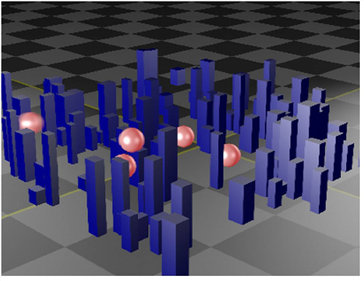

深度合成是一种使用不同格式的数据来合成数字图像的方法，与标准的 “平面” 合成不同。顾名思义，深度合成使用额外的深度数据。这减少了重新渲染的需要，产生高图像质量，并帮助您解决对象边缘周围的瑕疵问题。
标准 2D 图像包含每个像素的每个通道的单个值。相比之下，深度图像在不同深度下包含每个像素的多个样本，每个样本包含每个像素的信息，如颜色、不透明度和相机相对深度。
例如，创建在场景中移动的对象的抵抗者之前需要重新渲染背景，透明像素和抗锯齿经常出现问题。与 Nuke 的深度合成节点集，您可以渲染一次背景，然后将对象移动到不同的位置和深度，而不必重新渲染背景。任何透明像素，例如运动模糊，也没有瑕疵，所以使用深度合成不仅更快，而且您还可以获得更高的图像质量。
|
 |
| 蓝色建筑中带有球形物体的深层复合材料。 |
与 Nuke 深度合成节点集，您可以:
• 用 DeepRead 节点阅读你的深层图像。请参阅 在深度镜头中阅读 .
• 将深层数据与 DeepMerge 合并，请参见 合并深层图像 .
• 使用 deephodout 节点从一对深层图像生成保留遮罩。请参阅 创建抵抗 .
• 将深层图像展平为常规 2D 图像，或从中创建点云。请参阅 创建深层数据 .
• 使用 DeepSample 节点在给定像素处采样信息。请参阅 采样深层图像 .
• 使用 DeepCrop 、 deeppreformat 和 DeepTransform 节点，以与常规图像相同的方式裁剪、重新格式化和变换深层图像。请参阅 裁剪、重新格式化和转换深层图像 .
• 使用 DeepFromFrames 、 DeepFromImage 、 deepprecolor 和 ScanlineRender 节点创建深层图像。请参阅 创建深层数据 .
|
|